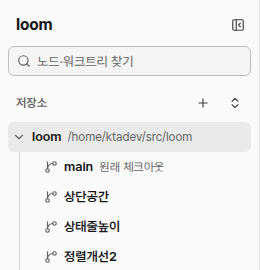
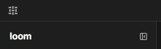

문서 ID: M12응답할 곳: 총괄 · loom 총괄연 담당: 총괄 · loom 총괄v1 · 2026-10-21
사이드바 맨 위: 「loom」 줄을 지운다
사용자 지시: "orca와 비교하면 loom의 좌측 상단 공간이 낭비되는데 좋은 방법 없나". 지금 사이드바 위에는 「loom」 글자와 접기 단추만 있는 줄이 있다. 이 줄을 지우고 접기 단추를 찾기 칸 오른쪽에 둔다. 점선이 바뀌는 곳이다.
① 지금
웹

Windows 앱

- 웹: 「loom」 줄 → 찾기 줄 → 저장소 줄. 「loom」은 브라우저 탭 제목과 같다.
- Windows 앱: 제목 줄에 짜임 무늬가 있고, 그 밑에 「loom」 줄이 또 있다. 같은 이름을 두 줄에 보인다.
② 바꾼 뒤 웹·Windows 앱 같음
웹
노드·워크트리 찾기
저장소
loom /home/ktadev/src/loom
main 원래 체크아웃
상단공간
Windows 앱
노드·워크트리 찾기
저장소
loom /home/ktadev/src/loom
main 원래 체크아웃
상단공간
- 「loom」 줄을 지운다. 사이드바가 한 줄(약 44px) 올라간다.
- 접기 단추는 찾기 칸 오른쪽으로 옮긴다. 키(Ctrl+Shift+[)와 툴팁은 그대로다.
- Windows 앱의 제목 줄은 그대로다. 짜임 무늬가 이름 구실을 한다. 빈 곳을 끌어 창을 옮긴다.
- 접은 상태(왼쪽 아이콘 줄)는 바꾸지 않는다.
승인할 것
- 권장: ② 그대로. 웹과 Windows 앱이 같은 코드다. 새 부품이 없다.
- 다른 안: Windows 앱만 접기 단추를 제목 줄 무늬 옆에 둔다(Orca 모양). 접고 펼 때 단추 자리가 앱마다 달라진다.